IBL Brain Wide Map · default mode network pilot · v6, 19 Oct 2026
Evidence for default mode network activation in IBL data?
International Brain Laboratory, Michael Schartner, Claude Opus 5.5
After the task, 396 of 426 BWM sessions have a passive block in which the screen is uniformly grey and nothing is presented (600 s in most sessions, 300 s in 55). It is the closest the dataset comes to a resting-state recording, although the mouse still moves for about a third of it. This report first fixes which brain regions count as default mode network (DMN), using four published rodent DMN maps. It then characterises the grey-screen block and uses it as the rest condition. It then tests whether those regions are more active at rest than during the task, across several rest and task windows, and maps which region pairs can be tested for co-activation.
Abstract
Which regions. Four rodent resting-state fMRI studies define the DMN differently (Figure 1). We restrict the analysis to the regions they agree on most: ACA and RSP, which all four include, plus PL and ORBm, which three include. This conservative core has seven Allen (Beryl) regions: ACAd, ACAv, PL, ORBm, RSPagl, RSPd and RSPv.
The rest condition. The grey-screen block starts a median 1.1 min after the last trial. The mice are calmer than between trials: the wheel moves in 14% of 50 ms bins instead of 48%, motion energy is half as high, and pupil size is unchanged. Stillness comes in short bouts (median 0.85 s); a median of 6.5 of the 10 minutes passes a strict stillness criterion.
Indicators tested.
Single-region indicators need only one region per recording, so they pool across all mice:
rest preference: higher firing at rest than during movement and feedback, the fMRI "task-negative" deactivation;
the amplitude and slowness of resting fluctuations, analogues of fMRI ALFF/fALFF;
local synchrony between a region's neurons, an analogue of fMRI ReHo.
Between-region indicators: co-activation of region pairs at rest, the defining measure of resting-state networks. These need two regions recorded at the same time.
How higher activity at rest is measured:
Per neuron: the firing rate in still grey-screen bins (0.3 s chunks with no wheel movement, licks or high motion energy) is compared with the per-trial rate in the task windows around movement onset, movement and feedback.
Rest index: RI = (rest − task)/(rest + task).
Suppressed neuron: rest is significantly higher than task (Welch t-test, one rest chunk per 3 s, p < 0.01).
Region level: mean RI and fraction of suppressed neurons per region. The core is compared with the rest of cortex by region permutation and a bootstrap over mice.
Results.
Rest preference is only modestly higher in the core. On average 42% of neurons per core region are suppressed during the task, against 35% in the rest of cortex. The mouse-bootstrap CI excludes zero, but the region permutation test does not (p = 0.07). Against only the last third of trials the difference is p = 0.03.
ORBm, RSPv and RSPagl are among the most suppressed cortical regions; ACAd and ACAv are below the median.
The difference is not significant against higher-order cortex alone, or for the continuous rest index.
The stronger effect in earlier versions of this report came largely from ILA, ECT, PERI and TEa, which are not in the core.
Across behavioural windows, no core region is less active during the task than at rest. Session-averaged rates in movement and feedback windows are 19% above still inter-trial rest in the core, against 39% in other cortex (section 5).
The core's "rest preference" is therefore a smaller task-related increase than the rest of cortex, not a deactivation.
Within the same sessions even that difference is not significant.
The one DMN-like change within the core, 6% lower firing while waiting still for the stimulus (quiescence) than still between trials, is shared by the rest of cortex (5%).
Resting fluctuation and synchrony do not distinguish the core from other cortex.
Pair co-activation is essentially untestable.
Only 7 of the 21 possible core pairs are ever recorded, all between neighbouring areas.
No session records frontal core and RSP together, so the frontal–retrosplenial link at the centre of every DMN map is never measured.
On the pairs that exist, core–core coupling equals core–other coupling.
The mesoscope images only the RSP part of the core.
In short, the BWM gives at most weak evidence that the most defensible DMN regions are task-negative, and it cannot test a resting-state DMN network.
1. Which regions count as DMN
The rodent DMN has no single agreed region list. Four studies give explicit maps; all define the network from resting-state fMRI in anaesthetised or sedated animals, not from neural recordings.
Lu et al. 2012 (PNAS 109:3979), rat. BOLD rsfMRI at 9.4 T in 16 rats under dexmedetomidine plus low-dose isoflurane. The network comes from group ICA (30 components) with dual regression; modularity analysis of 13 regions of interest splits it into a prefrontal-temporal and a parietal module, with prefrontal cortex and RSP as hubs. Rat areas are mapped here to mouse areas.
Grandjean et al. 2020 (NeuroImage 205:116278), mouse. 17 rsfMRI datasets from different centres (255 scans; 4.7–11.7 T; various anaesthesia or awake) through one pipeline, labelled in the Allen CCFv3.
An anterior cingulate seed shows prefrontal cortex, RSP, dorsal striatum, dorsal thalamus and peri-hippocampal areas.
Group ICA gives DMN components named prefrontal, cingulate/RSP and temporal association areas. The prefrontal subregions are not specified.
Whitesell et al. 2021 (Neuron 109:545), mouse. BOLD rsfMRI at 7 T in 40 mice under light halothane sedation. Group ICA (5 components) gives the DMN component, which is registered to the Allen CCFv3. A cortical region counts when more than 50% of its voxels lie in the core mask. Anterograde viral tracing shows that these regions are preferentially interconnected.
Mandino et al. 2022 (Mol. Psychiatry 27:2110), mouse. rsfMRI co-activation patterns, and viral-tracer projection similarity to an anterior cingulate seed, define the DMN within a triple-network model. Its cortical part is labelled ACA and RSP ("anterior and posterior cingulate"), with an unlabelled medial visual extension.
Figure 1 shows how the four maps overlap at the Allen (Beryl) level.
All four: ACAd, ACAv, RSPagl, RSPd and RSPv.
Three (Lu, Whitesell and Grandjean's prefrontal component): PL and ORB. Mandino et al. name only cingulate regions.
Two at most: ILA, VISa, VISam and TEa.
One paper only: SSp-tr, SSp-ll and MOs (Whitesell), and auditory cortex, VISrl, VISpm and CA1 (Lu).
None: ECT and PERI, which earlier versions of this report included as a "lateral" DMN.
The analyses below therefore use a conservative core: ACA and RSP, which all four maps include, plus PL and ORBm. ORBl and ORBvl have the same literature support as ORBm, and their effect on the results is noted where relevant.
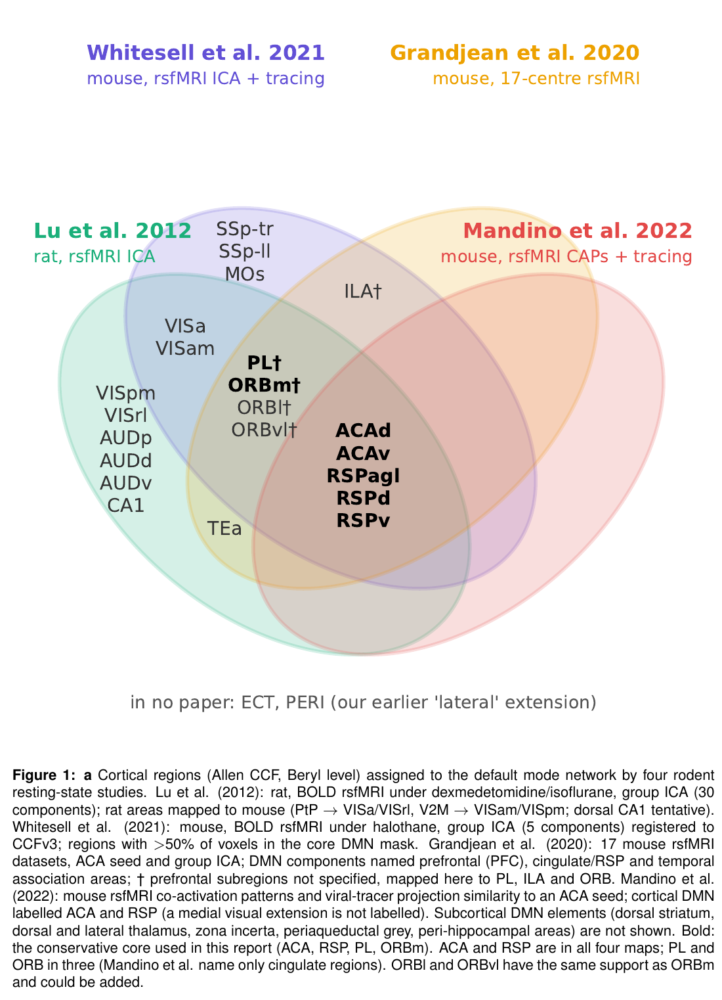
2. What the grey-screen period is
The passive protocol (iblrig passiveChoiceWorld, version 7 for the BWM) runs after the task, with the mouse still head-fixed at the rig. The experimenter turns the water valve off first. Its Bonsai workflow clears the screen to Gray, keeps the sync square off and runs only a timer (10 min by default; 5 min in the passiveChoiceWorldIndependent variant). Frame2ttl spacer patterns before and after the block let ibllib extract it into _ibl_passivePeriods.intervalsTable. Receptive-field mapping (about 5 min) and the replay of task stimuli, valve clicks and tones follow.
Coverage: 396 of 426 extracted BWM sessions (130 mice) have the interval; the other 30 have no passive data.
When: always after the task, a median 1.1 min after the last trial (5–95%: 0.6–3.9 min).
How long: 600 s in 341 sessions and 300 s in 55 (Figure 2). The first second is skipped in all analyses.
Example session (Figure 2f–g): CSH_ZAD_019 has 55 neurons in RSPagl, RSPd and RSPv and median stillness. Panel f zooms into 10 s at 50 ms resolution, showing the alternation of brief movements and still bouts alongside the activity of its 20 most active retrosplenial neurons. No session records frontal core and RSP together.
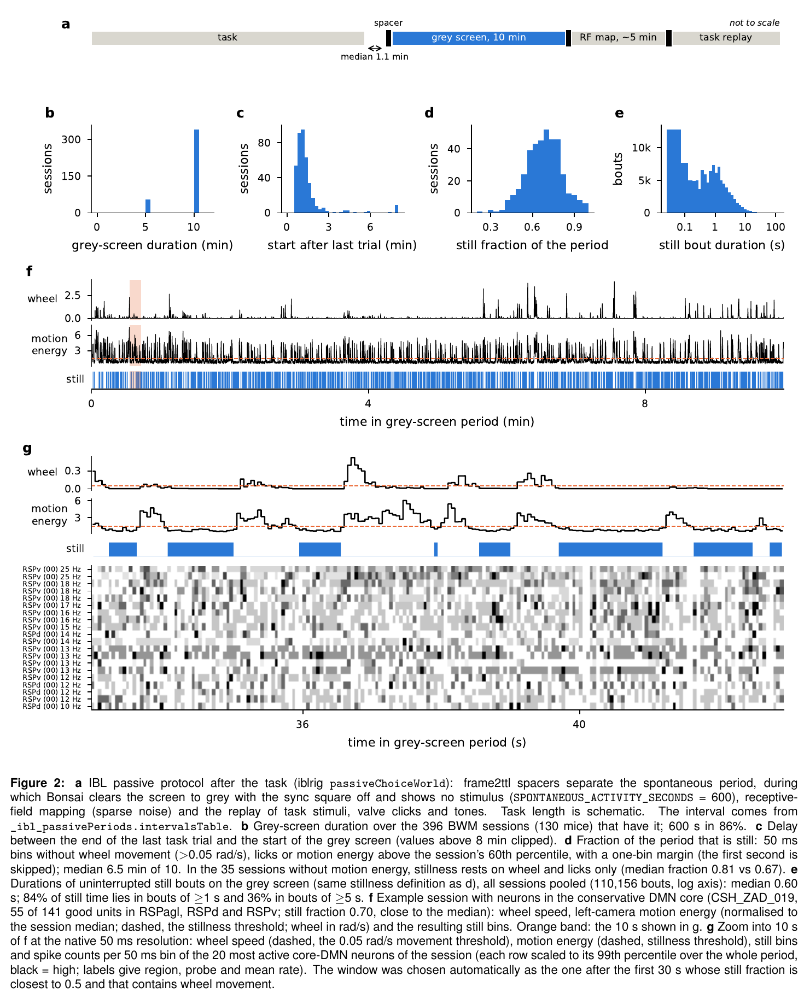
3. Is the mouse inactive?
Mostly, but not continuously. Compared with the task ITIs of the same session, the wheel and the face move far less. Pupil size is about the same, so the mice are not drowsier than during the task (Figure 3).
Per session, median (5–95%)
Grey screen
Task ITI
Fraction of 50 ms bins with wheel movement (338 sessions)
0.14 (0.03–0.30)
0.48 (0.20–0.72)
Fraction of bins with motion energy above the session's 60th percentile (361)
0.23 (0.08–0.38)
0.44 (0.27–0.65)
Motion energy, grey / ITI
0.51 (0.23–1.14)
Pupil diameter, grey / ITI
1.02 (0.76–1.25)
Still fraction of the period
0.69 (0.47–0.89)
Still time
392 s (203–513)
Median length of a still bout
0.85 s (0.25–2.45)
Fully still 1 s bins
212 (46–417)
Missing behaviour data: motion energy is missing for 35 sessions and the wheel for 58. Without motion energy, stillness rests on wheel and licks only and is more lenient (still fraction 0.81 vs 0.67). Section 4 repeats the main test without these sessions.
Licks: 107 sessions show more than 10 detected licks per minute on the grey screen, with no reward available. Part of this is probably lick-detection noise; lick bins are excluded either way.
Most face and paw movements happen without wheel turns. In a session examined in detail (ZFM-01577), only 40% of the bins with high motion energy have any wheel movement. The rest are brief snout, head and paw movements (median 0.15 s, about one per second), confirmed by the nose and paw keypoints and by the right camera (motion energy correlated with the left camera at 0.93). The stillness criterion removes these too, not just wheel turns.
Still bouts are short (Figure 2e). Pooled over all sessions there are 110,156 uninterrupted still bouts on the grey screen, median 0.6 s. Their durations are bimodal: many 50–100 ms gaps between movements, and a second mode around 1 s. 84% of still time lies in bouts of at least 1 s, but only 36% in bouts of at least 5 s.
Stillness is stable over time: the still fraction stays near 0.68 from the first to the last minute (Figure 3d).
4. Rest preference measured against the grey screen
Each neuron's activity during the task is compared with still 0.3 s chunks of the grey-screen period. Task activity is the per-trial mean of the movement-onset, movement and feedback windows. The conservative core is somewhat more suppressed than the rest of cortex, but the difference is modest and not robust to every comparison (Figure 4).
Region set vs other cortex
Suppressed, set / other
p (regions)
Mouse CI (% points)
Rest index p
Last third of trials, p
Conservative core (7 regions)
42.0 / 34.6%
0.069
[1.6, 13.2]
0.21
0.032
… vs higher-order cortex only
42.0 / 37.2%
0.21
[−1.1, 11.0]
0.54
0.079
… sessions with motion energy only (361)
42.5 / 34.6%
0.055
[0.5, 14.0]
0.20
0.037
Whitesell et al. (15)
40.4 / 33.3%
0.025
[0.7, 11.7]
0.23
0.016
Lu et al. (17)
38.3 / 34.2%
0.18
[−0.5, 9.2]
0.38
0.060
Suppressed: p < 0.01 in a Welch test of rest chunks (one per 3 s) against task trials, with rest above task; the fraction is averaged over regions. There are 53,213 neurons from 395 sessions and 130 mice. p values come from 20,000 region permutations; CIs come from a bootstrap over mice.
Core region
Suppressed vs grey
Rank (of 43 cortical regions)
RI
Neurons (mice)
ORBm
49%
4
0.12
138 (5)
RSPv
49%
5
0.06
413 (20)
RSPagl
44%
7
−0.02
171 (15)
RSPd
42%
13
0.00
294 (21)
PL
40%
15
0.02
166 (12)
ACAv
36%
25
0.02
90 (8)
ACAd
34%
28
−0.11
249 (15)
Cortex median: 37% suppressed, RI −0.03. The most suppressed regions overall are ILA (56%), ECT (52%) and PERI (50%), which are not in the core.
Most neurons differ: 81% of all neurons differ significantly between grey screen and task (suppressed or enhanced), so the suppressed fraction is close to the sign of RI.
Drift: task-window rates rise from the first to the last third of trials (median drift index +0.24 across cortical regions), but the drift is not specific to the core (p = 0.53). Against only the last third of trials, closest in time to the grey screen, the core is p = 0.03.
Agreement with the ITI reference: the region ordering agrees with the earlier ITI-based analysis (Spearman ρ = 0.44 across 43 regions).
Comparison sets: the full Whitesell set is about as strong as the core; the Lu set, which adds auditory cortex, VISrl and VISpm, is weaker (Figure S1).
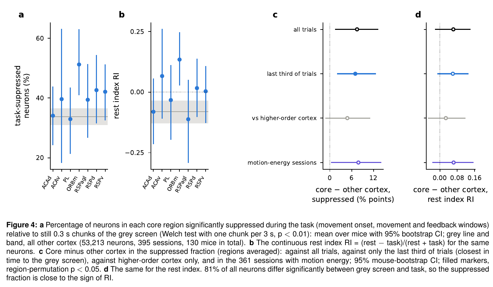
5. Firing rates across behavioural windows
What the DMN literature predicts.
Deactivation is measured against the region's own baseline. In human fMRI the DMN signature is a decrease of a region's own activity during externally directed tasks, relative to its resting baseline (task-induced deactivation; Shulman et al. 1997, Raichle et al. 2001). The test is within region; specificity means other regions do not decrease, or increase.
The analogue is the population mean rate. BOLD follows pooled population activity, so the closest spiking measure is the population mean firing rate, not the fraction of individually significant neurons.
Movement is a confound. In mice, movement raises firing across most of cortex (Stringer et al. 2019; Musall et al. 2019), and the task windows contain movement. A rest-versus-task difference can therefore reflect movement rather than DMN-like disengagement.
Two comparisons separate engagement from movement:
quiescence (waiting for the stimulus, engaged and still) against inter-trial rest (between trials, disengaged and still). A DMN region should drop during quiescence.
moving against still bins with no task at all, which measures the movement effect alone.
Two rest conditions are compared: inter-trial rest, interleaved with the task (no drift), and the grey screen, longer and later.
Window definitions. Figure 5a shows the windows on a median trial, aligned to stimulus onset. All windows were fixed before looking at DMN results. Each neuron's rate in a window is its spike count summed over all qualifying trials or bins of the session, divided by their total duration.
Window
Definition
Bins used
Duration
Why this window
Stimulus
0 to 0.15 s after stimulus onset (stimOn_times)
all (exact spike counts per trial)
0.15 s per trial
sensory response to the visual stimulus; the window of the ~/dmn PETH pipeline
Movement + feedback
mean of three windows: first movement −0.15 to 0 s and 0 to 0.15 s (firstMovement_times), and feedback 0 to 0.3 s (feedback_times, reward or error)
all (exact spike counts per trial)
0.15, 0.15 and 0.3 s per trial
the active, externally directed part of the trial; the task windows of section 4 and of the ~/dmn pipeline (BWM single-cell windows are shorter: 0.1, 0.1 and 0.2 s)
Quiescence
trial start (intervals_0) to 0.1 s before stimulus onset
still bins only
median 0.7 s per trial (IQR 0.56–1.17)
engaged waiting without movement: the mouse must hold the wheel still for the stimulus to appear. The last 0.1 s is cut to exclude anticipation and the earliest visual responses
ITI rest
trial end (intervals_1) to the next trial start (intervals_0)
still bins only
median 0.67 s per trial
disengaged rest between trials, interleaved with the task so slow drift cannot separate it from the task windows. Feedback to trial end (1.57 s; reward consumption and licking, or the error tone) is left out
ITI moving
the same inter-trial gaps
moving bins only
median 0.67 s per trial, moving part
movement without the task, interleaved with it
Grey still
passive grey screen (_ibl_passivePeriods, spontaneousActivity), first second skipped
still bins only
median 392 s per session
long passive rest after the task, the closest to a resting-state scan
Grey moving
the same grey-screen period
moving bins only
the remaining ~3 min per session
movement with no task at all
Still bin: a 50 ms bin with wheel speed ≤0.05 rad/s, no detected lick, and left-camera motion energy at or below the session's 60th percentile. One bin on either side of any movement is also excluded. Moving bin: any of these criteria violated, without the margin.
Trials: BWM trial criteria apply to all trial-based windows.
Inclusion: a window enters a session's estimate only with at least 2 s of bins in total. Neurons need an overall rate of at least 0.5 Hz.
Known weak points:
In the quarter of trials with reaction times under 0.13 s, the stimulus window already contains movement onset.
Task windows (0.15–0.3 s around events) weigh transient responses more than the seconds-long rest windows.
The motion-energy threshold is relative within each session.
Quiescence includes recovery after wheel movements that restart it.
The inter-trial gap starts right after trial end.
A sensitivity analysis over these choices has not been run yet.
Data: 58,417 neurons ≥0.5 Hz, 426 sessions, 138 mice; the core has 1,951 neurons from 49 mice.
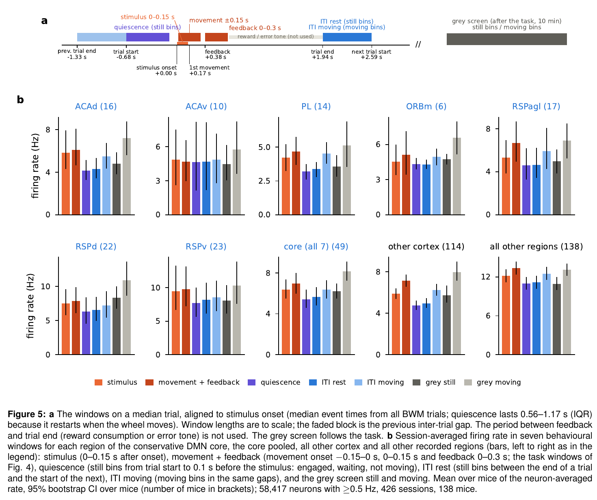
Results (Figure 6). Values are log2 rate ratios, mean over mice with 95% CI. "Within session" compares core neurons with non-core neurons recorded at the same time.
Contrast
Core
Other cortex
All other regions
Core − other cortex, within session
Core − all other, within session
Movement + feedback / ITI rest
+0.25 [0.09, 0.40]
+0.48
+0.43
−0.11 [−0.35, 0.12], p = 0.35
−0.16 [−0.35, 0.04], p = 0.14
Stimulus / ITI rest
+0.13 [0.04, 0.22]
+0.23
+0.23
+0.03, p = 0.57
−0.09, p = 0.13
Quiescence / ITI rest (engaged, still)
−0.09 [−0.15, −0.03]
−0.07
−0.01
+0.01 [−0.06, 0.07], p = 0.82
−0.07 [−0.13, −0.01], p = 0.02
Grey still / ITI rest
+0.01 [−0.21, 0.24]
−0.02
−0.28
−0.01, p = 0.85
+0.25, p = 0.04
ITI moving / ITI still
+0.18 [0.04, 0.32]
+0.34
+0.34
−0.05, p = 0.52
−0.16, p = 0.07
Grey moving / grey still
+0.31 [0.23, 0.41]
+0.42
+0.43
+0.02, p = 0.98
−0.09, p = 0.21
No task-induced deactivation. The core fires 19% more during movement and feedback than in still inter-trial rest, and 10% more after stimulus onset. Every core region is at or above its rest rate in the task windows.
The core increases less than other cortex (39%). That difference is significant over mice (−0.23, CI −0.40 to −0.05), but not over regions (p = 0.18) or within sessions (p = 0.35).
Engagement without movement lowers firing, but not specifically in the core. While waiting still for the stimulus, core neurons fire 6% less than when still between trials. This is the direction the DMN literature predicts.
Other cortex drops by 5%, so the core does not differ from it (within session p = 0.82).
It differs only from the brain-wide average, which barely changes (p = 0.02): a cortical, not a DMN-specific, effect.
Movement raises firing in the core too, by 13–24%, somewhat less than elsewhere. The core's weaker task increase fits its weaker movement modulation.
Grey-screen and inter-trial rest give similar core rates. The grey screen does not reveal a higher "deep rest" level in the core.
Suppressed neurons: with inter-trial rest or quiescence as the reference, the core has more neurons that fire less during the task than at rest (28% vs 22% in other cortex for inter-trial rest, region-permutation p = 0.02; 27% vs 21% for quiescence, p = 0.03).
Within session the difference is not significant (p = 0.14 and 0.06). Individual suppressed neurons exist in every region, and the population mean of the core still rises during the task.
Trial-by-trial co-fluctuation in inter-trial rest and quiescence (Figure 6d): core–core pairs are more coupled than core–other pairs (+0.10, CI 0.04–0.17, 26 mice).
This comes from same-probe neighbours less than 0.5 mm apart, mainly RSPd–RSPv and RSPagl–RSPd, which are subdivisions of one area.
The 4 cross-probe core pairs are below average, and distance-matched within session the excess is +0.06 (CI −0.02 to 0.13, 12 mice).
Interpretation. Measured as the fMRI literature defines it, against the region's own baseline in population firing, the conservative DMN core is not deactivated by the task in any window. Its apparent rest preference is relative: it is less recruited by movement and the task than the rest of cortex. The only DMN-like absolute change, lower firing during still, engaged waiting, is shared by other cortex.
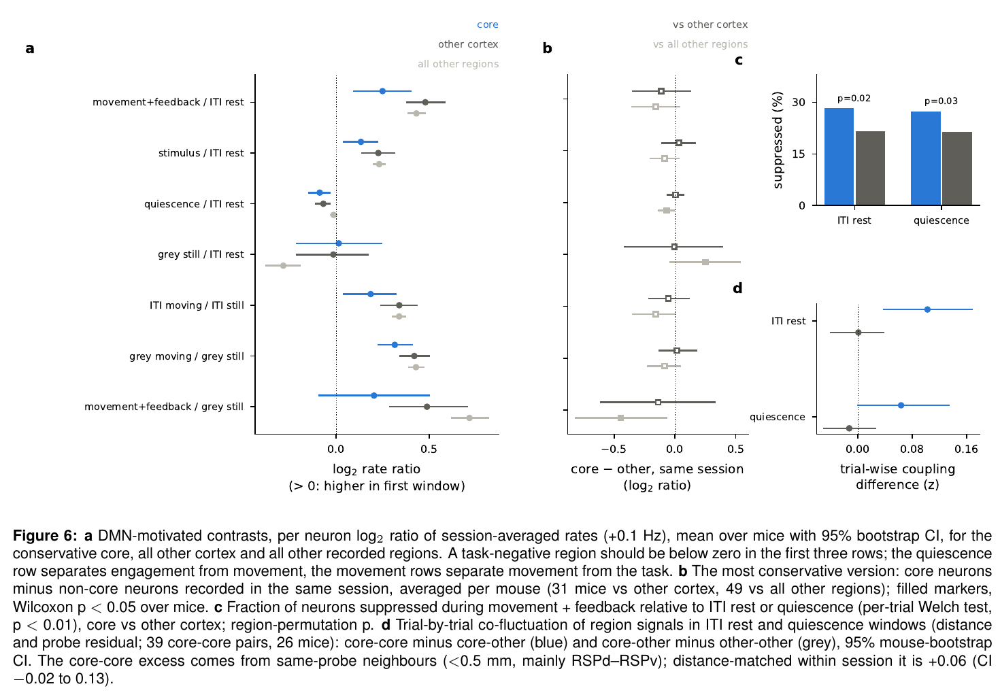
6. Which region pairs can be computed
Resting-state networks are defined by co-fluctuation, which needs two regions recorded at the same time. A region pair counts if a session has at least 5 neurons in each region and at least 120 fully still 1 s bins. 319 sessions (116 mice) have enough still bins and 308 of them yield region signals, but only 104 (70 mice) record any cortical or CA1 pair (Figure 7).
Core regions per session: of the 308 sessions, 267 record no core region, 21 record one, 19 two and 1 three.
Frontal core and RSP are never recorded together: frontal core (ACA, PL, ORBm) appears in 17 sessions and RSP in 24, never in the same one.
Core pairs: 7 of the 21 possible core pairs are recorded, all between neighbouring areas: ACAd–ACAv, ACAd–PL, ACAv–PL, ORBm–PL and the three RSP subdivisions.
Pairs in at least 3 mice: three (ACAd–ACAv, ACAd–PL, RSPd–RSPv). None is recorded on two probes in 3 mice.
The wider literature sets do not help: 24 of 105 Whitesell pairs and 34 of 153 Lu pairs are recorded. None links frontal and posterior DMN.
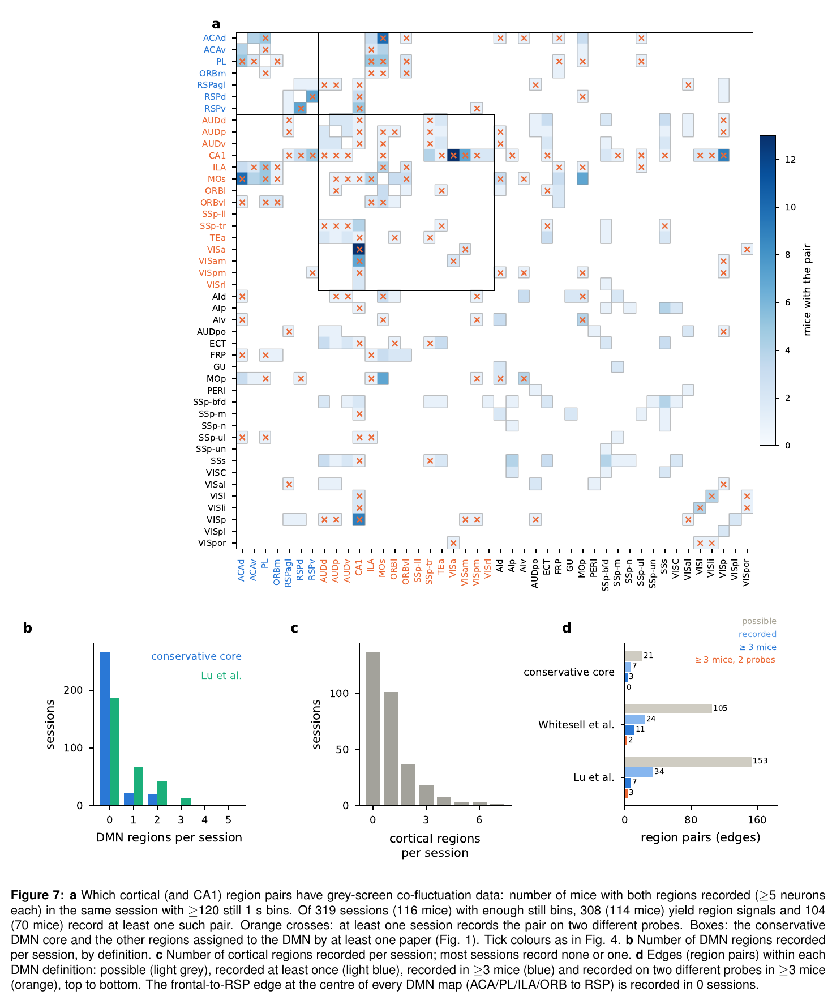
7. Do DMN regions co-fluctuate on the grey screen?
There is no evidence that they do. Each region signal is the mean of z-scored neurons in still 1 s bins, after regressing out wheel, licks and motion energy. Each pair correlation is compared with cortical pairs at the same distance and probe relation (Figure 8).
Core: core–core pairs couple exactly as much as core–other pairs: +0.0005 z, CI −0.10 to 0.11. That is 25 pairs from 20 sessions and 18 mice; the smallest detectable effect at 80% power is 0.15 z. Only 4 core–core pairs come from two probes, too few to test.
Single core edges recorded in ≥3 mice are all compatible with zero (ACAd–ACAv +0.03, ACAd–PL 0.00, RSPd–RSPv −0.03).
Within session: core–core minus core–other is +0.04 (8 mice, p = 0.64).
Literature sets: the full Whitesell set gives a two-probe excess of +0.15 z, but 72% of those pairs come from two frontal multi-probe sessions (Figure S2). The Lu set shows nothing.
Cross-validated rest-preference network: cortical regions that prefer rest in one half of the mice do not co-fluctuate more in the other half (52% of 400 splits).
State invariance: the same region pair in the same session couples similarly on the grey screen and in task ITIs (Spearman ρ = 0.39 over 3,516 pairs). Coupling structure is partly a fixed property of the recorded circuits.
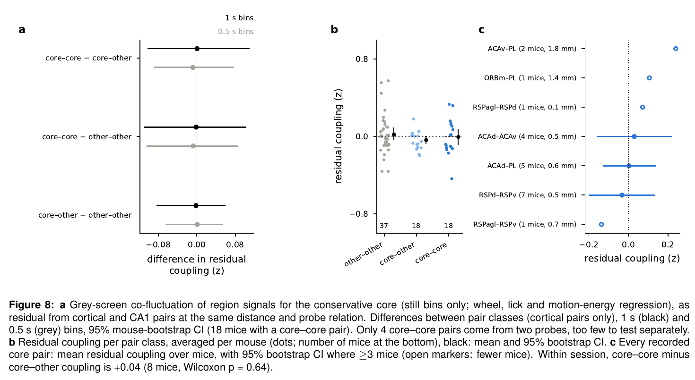
8. Mesoscope comparison
The mesoscope images many dorsal areas at once, but none of the frontal core.
Sessions: 79 of 102 canonical sessions with passive data have only 60 s of grey screen. Of the 23 longer ones, 14 have motion energy to verify stillness, and 13 of these (7 mice) yield region pairs (Figure 9).
The core is RSP only: RSPagl and RSPd give a single core–core pair, from one mouse. Core–other pairs are not more coupled than other–other pairs (+0.02 z, CI −0.05 to 0.07).
Other literature DMN regions: VISa and VISam (Lu and Whitesell) are among the most coupled imaged regions, together with trunk somatosensory cortex; auditory cortex and TEa are among the least. This pattern is not specific to DMN regions.
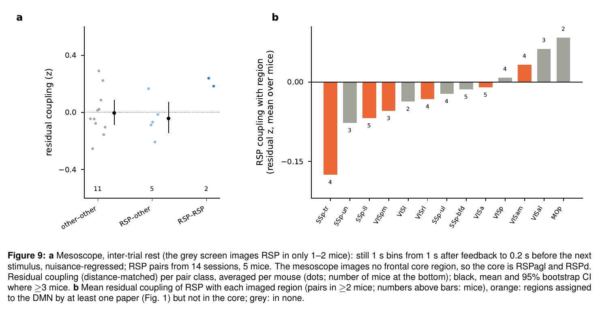
9. Single-region resting metrics
Resting-state fMRI also has measures for one region at a time. ALFF and fALFF measure how strongly and how slowly a region fluctuates at rest; ReHo measures how synchronised neighbouring voxels are. Their electrophysiological analogues need only one region per recording, so they pool across all 130 mice (Figure 10).
fALFF is the fraction of slow (0.01–0.1 Hz) power in each neuron's 1 s rate, after regressing out wheel, licks and motion energy and adjusting for firing rate. It gives a reproducible cortical map (split-half Spearman–Brown 0.75), but the core does not stand out (+0.0005, p = 0.97).
Fluctuation amplitude (coefficient of variation of the 1 s rate) is largely set by firing rate (ρ = −0.79). After rate adjustment the core is slightly lower: −0.06, with a mouse CI excluding zero but region-permutation p = 0.14.
Local synchrony (mean correlation between neurons of one region in still 1 s bins; 1,695 region-sessions, 116 mice) does not differ (−0.01, p = 0.57).
Independence: these resting metrics are unrelated to rest preference across regions (fALFF ρ = −0.05).
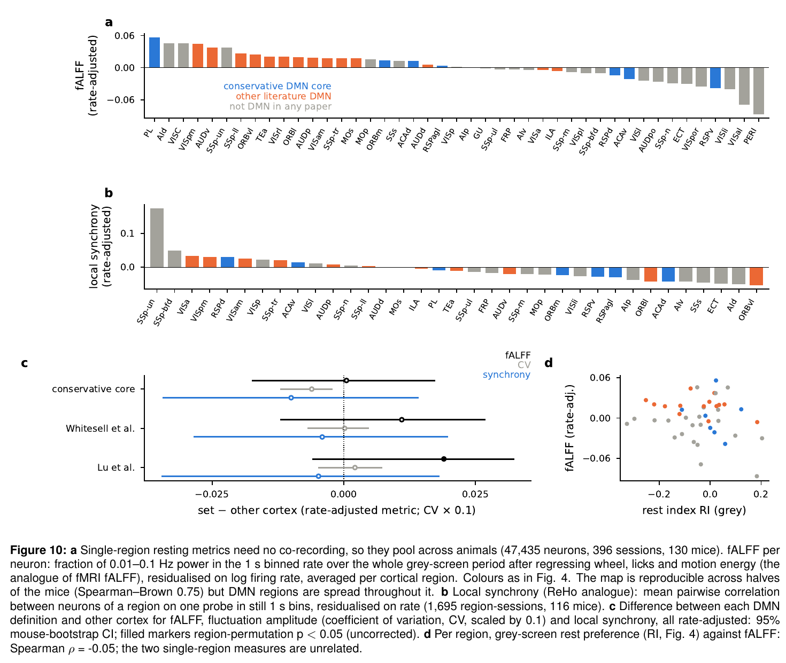
10. How convincing is this as evidence for DMN activation at rest?
Criterion
Verdict
Evidence
A true rest period exists in the data
Yes
10 min grey screen in 396 sessions, about 6.5 min of it still
The DMN regions are agreed in the literature
Partly
ACA and RSP in all four maps, PL and ORB in three; the rest disputed
Core DMN regions have relatively more rest-preferring neurons than other cortex
Weak
42% vs 35% suppressed: mouse CI excludes 0, region permutation p = 0.07; not vs higher-order cortex; ORBm and RSP yes, ACA no
Core firing drops during the task relative to the region's own rest (fMRI-style deactivation)
No
+19% during movement and feedback, +10% after the stimulus; smaller increase than other cortex (+39%) but not significant within session
Core firing drops during engaged, still waiting (quiescence vs inter-trial rest)
Not specific
−6% in the core, −5% in other cortex; differs only from the brain-wide average
Core regions fluctuate differently at rest (fALFF, amplitude, synchrony)
No
Reproducible maps, no core difference after rate adjustment
Core regions co-fluctuate at rest more than with other regions
Not shown
+0.0005 z (18 mice); detectable effect ≥0.15 z; two-probe pairs too few
Frontal and retrosplenial DMN are coupled
Untestable
Never recorded together in BWM; frontal core not imaged in the mesoscope
Restricted to the regions the literature agrees on, the BWM gives at most weak evidence for task-negative DMN activity, and only in a relative sense: the core is less recruited by movement and the task than other cortex, but its population firing never drops below its own resting level. The orbital and retrosplenial parts of the core prefer rest; the anterior cingulate does not. Earlier, stronger results depended on regions outside this core (ILA, ECT, PERI, TEa). A resting-state DMN is defined by co-fluctuation between frontal and retrosplenial cortex, and BWM recordings never contain both. A convincing test needs simultaneous frontal and posterior recordings with a long grey-screen block: multi-probe sessions targeting ACA/PL and RSP, or wide-field or mesoscope imaging that includes medial frontal cortex.
Supplementary figures: the wider literature sets
Figure S1 places the conservative core next to the full Whitesell et al. and Lu et al. sets for rest preference, with region membership in all four papers. Figure S2 shows which Whitesell edges can be tested and how they couple, in the BWM and the mesoscope.
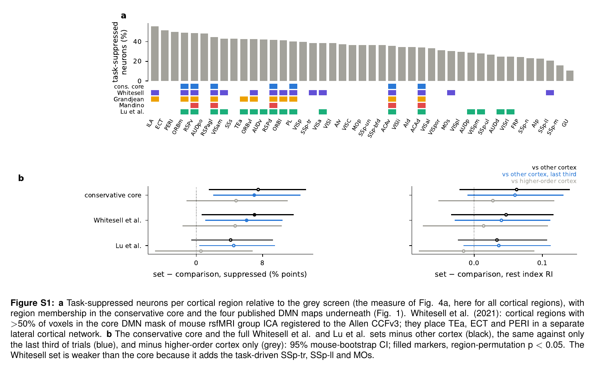
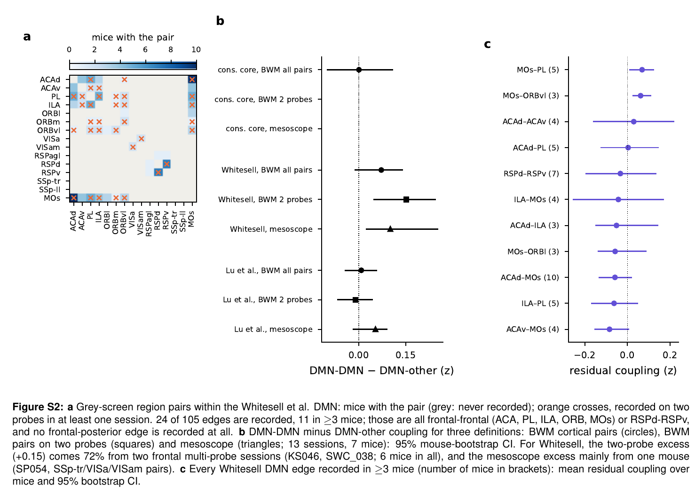
Methods
Data
BWM: 2023 release, all bwm_query insertions, good units. Spike counts are binned at 50 ms over the whole recording, with wheel speed, licks, left-camera motion energy and pupil diameter on the same grid.
Grey-screen interval:spontaneousActivity from _ibl_passivePeriods.intervalsTable; the first second is skipped.
Mesoscope: canonical sessions, deconvolved ROI activity in 1 s bins. Only sessions with ≥200 s of grey screen and with motion energy are used.
Stillness
50 ms bins: a bin is still if wheel speed is ≤0.05 rad/s, no lick is detected and motion energy is at or below the session's 60th percentile. For rest preference and the movement statistics, one bin on either side of any movement is also excluded.
Coupling: a 1 s (or 0.5 s) bin is used only if all its 50 ms bins are still (no extra margin).
Rest preference (Figure 4)
Rest samples: 0.3 s chunks of consecutive still grey-screen bins. The rate uses all chunks (median 1,171 per session). The test uses the first chunk in every 3 s window (median 186), so the samples are roughly independent.
Task samples: per-trial rates in the movement-onset (−0.15–0 s), movement (0–0.15 s) and feedback (0–0.3 s) windows, averaged, using BWM trial criteria (median 381 trials).
Per neuron: Welch t-test between the two sample sets. Suppressed means p < 0.01 with rest above task. RI = (rest − task)/(rest + task). Neurons below 0.5 Hz are excluded.
Drift index: (last − first)/(last + first) of the task-window rate, comparing the last and first third of trials.
Higher-order cortex: cortex outside the tested set and outside the primary areas (VISp, SSp, MOp, AUDp, GU, VISC).
Region tests: regions need ≥20 neurons in ≥2 sessions. The mean over set regions minus the mean over other cortex is tested by region permutation (20,000) and mouse bootstrap (1,000).
Behavioural windows (Figures 5–6)
Rates: session-averaged per neuron (≥0.5 Hz overall). Trial windows use the BWM trial mask; each window needs ≥2 s of bins per session. Contrasts are log2((a + 0.1)/(b + 0.1)).
Summary over mice: neurons are averaged within each mouse, then over mice, with a mouse bootstrap.
Within-session tests: core neurons minus non-core neurons of the same session, averaged per mouse; bootstrap and Wilcoxon over mice.
Suppressed (Figure 6c): per-trial rest rate (trials with ≥2 still bins) against the per-trial movement + feedback rate, Welch test, p < 0.01.
Trial-wise co-fluctuation: per region (≥5 neurons on one probe), the mean of z-scored per-trial window rates. Trial number (2nd order), per-trial motion energy and pupil are regressed out; correlations across trials (≥50 trials) give the coupling, residualised for distance and probe relation.
Co-fluctuation (Figures 7–9)
Nuisance regression: per neuron, wheel, licks and motion energy (each with a 1-bin lag; no lags in the mesoscope) are regressed out within the still bins.
Region signal: mean of z-scored neurons per region and probe (≥5 neurons; ≥10 ROIs in the mesoscope), with split-half reliability. Mesoscope pairs need reliability ≥0.5.
Coupling: Fisher z of the pair correlation minus the mean z of cortical (and CA1) pairs in the same 0.5 mm 3-D distance bin and probe relation. The mesoscope uses ML–AP distance with hemispheres folded.
Classes: DMN–DMN, DMN–other and other–other cortical pairs; CA1 is added for the Lu all and Lu parietal sets. Differences are bootstrapped over mice (2,000). The detectable effect is 2.8 × the bootstrap standard error.
Rest-preference network: cortical regions are split into terciles of grey-screen RI in one half of the mice, and coupling is evaluated in the other half; 200 random splits × 2.
Single-region metrics (Figure 10)
Preprocessing: 1 s binned spike counts over the whole grey-screen period. Wheel, licks and motion energy (each with a 1-bin lag) are regressed out per neuron. Neurons need ≥0.5 Hz.
fALFF: Welch power spectrum (128-s segments), power in 0.01–0.1 Hz divided by power in 0.01–0.5 Hz. CV: standard deviation over mean of the 1 s rate.
Local synchrony: mean pairwise Pearson correlation between neurons of one region on one probe (≥5 neurons), using fully still 1 s bins (≥120).
Rate adjustment: each metric is replaced by its residual after a linear fit on log firing rate across all units.
Region tests: as for rest preference. Synchrony uses region-sessions, with ≥3 per region from ≥3 sessions.
Whitesell et al. (2021): ACAd, ACAv, PL, ILA, ORBl, ORBm, ORBvl, VISa, VISam, RSPagl, RSPd, RSPv, SSp-tr, SSp-ll, MOs (their Fig. 1E, >50% of voxels in the core mask).
Lu et al. (2012), mapped to mouse: ORBm, ORBl, ORBvl, PL, ACAd, ACAv, AUDp, AUDd, AUDv, TEa (prefrontal-temporal module); RSPagl, RSPd, RSPv, VISa, VISrl, VISam, VISpm, CA1 (parietal module).
Grandjean et al. (2020): ACAd, ACAv, RSPagl, RSPd, RSPv, TEa, and their unspecified prefrontal component mapped to PL, ILA, ORBm, ORBl, ORBvl.
Mandino et al. (2022): ACAd, ACAv, RSPagl, RSPd, RSPv.
Earlier versions of this report used a broader set (ACA, PL, ILA, ORB, RSP, VISa, VISam, plus TEa, ECT and PERI as "lateral"); ECT and PERI are in none of the four maps.
Notes and caveats
Post-task rest: this is rest after an hour of task under water restriction, not a naive resting state; the rats of Lu et al. were anaesthetised. Arousal, satiety and drift all differ between task and grey screen. Comparisons between regions are less affected than absolute levels.
Small correlations: mean region-pair correlations in still 1 s bins are 0.07 across probes and 0.10 within a probe, so coupling differences are subtle and need many mice.
Shared region signals: pairs that share a region signal are not independent. The mouse bootstrap handles this between mice but not within a session.
Mesoscope labels: mostly pre-histology estimates; RSP is at the edge of most fields of view. Pairs are not split by field of view.
Code:
~/default_mode_network/bwm/: 40_spont_characterize.py, 42_spont_A.py (G_full; G_me me_only), 21_full_B.py spont motion 1 still (and 0.5) and 41_spont_network.py, 43_spont_single_region.py, 44_windows.py, 45_window_stats.py;
region sets in bwm/common.py; Figure 1 from report/fig_regions.py, Figures 5–6 from report/fig_windows.py;